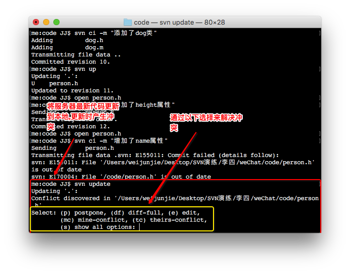
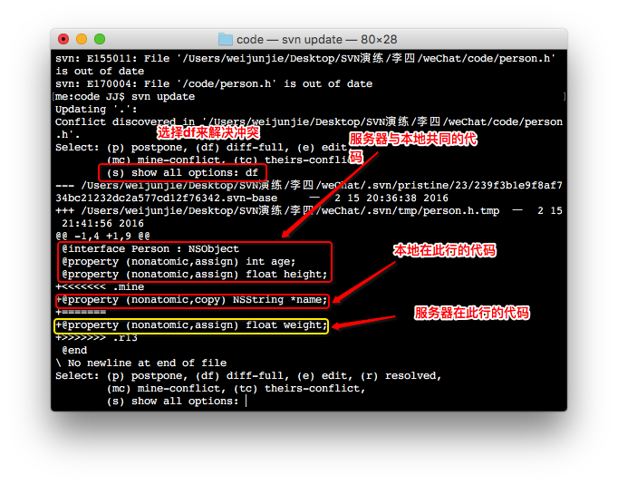
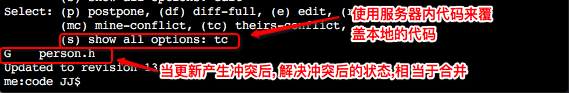
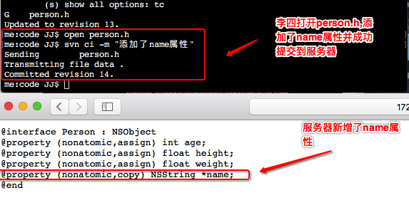
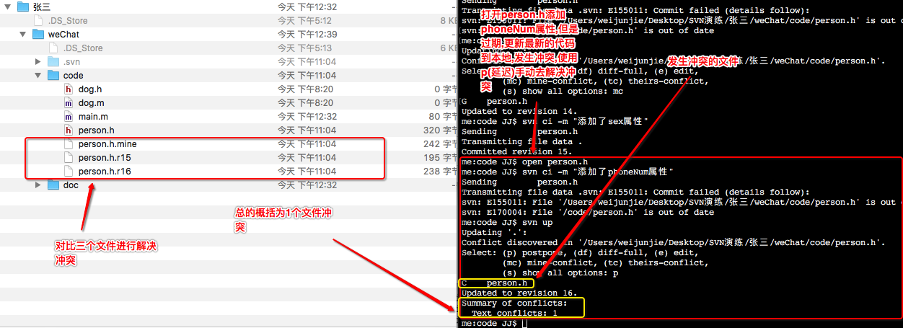

二.进行开发操作1.李四将服务器最新的代码更新到本地提示有冲突,并提示如何去解决冲突,提示解决冲突方案
1.(df)diff-full:显示该文件在服务器与本地代码的所有变化
2.(e)edit:进入编辑状态,在终端解决冲突(不推荐)
3.(mc)main-conflict:用本地的代码覆盖服务器的代码
4.(tc)theirs-full:用服务器的代码覆盖本地的代码
5.(p)postpone:延期解决冲突,将冲突的文件下载到本地进行手动解决冲突
6.show all options : 展示所有的选项
svn update
2.输入df,展示产生冲突的代码,本地新增与服务器新增的代码,可以通过edit来解决冲突(一般不推荐在终端解决),这里多了个resovled
(r)resovled:当使用命令行去解决冲突时,最后需要通过此选项来执行已经解决冲突的操作
3.李四作为一个新人,一般会有些胆怯心里,让服务器代码来覆盖本地的代码(虽然没有必要),选择tc
4.之后李四打开person.h,发现之前添加的name属性没了,然后在下一行添加了name属性,之后提交到服务器
open person.h
svn commit -m "添加了name属性"
5.这个时候张三可能不知道服务器有最新的代码,而是打开person.h,添加了sex属性,但是在提交时发生了错误,out of date(过期),之后更新代码,发生冲突,这个时候张三觉得自己作为老员工使用本地的代码覆盖服务器的代码,之后本地的版本号就不低于服务器的版本号了,最后提交到服务器
open person.h(添加sex属性)
svn commit -m "添加了sex属性"(提交修改的文件报过期错误)
svn update(更新服务器代码产生冲突)
mc(使用本地的代码覆盖服务器的代码)
svn commit -m "添加了sex属性"(解决冲突后再提交到服务器)

6.这个时候有个人就比较苦逼了,李四查看下有没有最新的代码,尝试更新最新的代码到本地,发现有最新的代码,之后打开person.h,发现name属性又没了(这老员工太不好伺候了!!!),然后添加了name属性,之后提交到服务器
svn update(尝试更新发现有最新的代码)
open person.h (发现name属性不见了,之后重新添加)
svn commit -m "添加了name属性"(重新提交)

7.张三这个时候可能不知道服务器已经有最新的代码了,而是打开person.h,添加了phoneNum属性,然后进行提交,提交之后依旧是out of date,之后更新代码,产生冲突,这次则使用延迟手动解决冲突
open person.h(添加phoneNum属性)
svn commit -m "添加了phoneNum属性"(out of date 过期)
svn update(更新服务器代码产生冲突)
p(延迟解决冲突,会在code文件夹下面多了三个文件夹)
person.h.mian:我本地的代码
person.h.r15:上一个版本的所有内容
person.h.r16:当前服务器版本的内容
8.打开person.h,可以发现服务器版本内容和本地版本的内容区别
open person.h

9.手动解决冲突,将person.h中错误语法删除,保留两个属性,之后通过命令来执行解决冲突的操作
svn resolved person.h(必须要跟上文件名,成功后,新增的三个文件会消失)

10.冲突操作在本地解决,服务器依旧是原来的代码

11.张三将本地的修改提交到服务器
svn commit -m "添加了phoneNum属性"

12.李四更新最新的代码到本地
svn update
open person.h